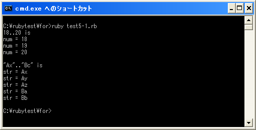

eachメソッド
「each」メソッドは配列や範囲オブジェクトなどで用意されているメソッドであり、オブジェクトに含まれている要素を順に取り出します。
「each」メソッドは次のように使用します。
オブジェクト.each{|変数|
実行する処理1
実行する処理2
}
又は次のように記述することも出来ます。
オブジェクト.each do |変数| 実行する処理1 実行する処理2 end
オブジェクトに含まれる要素を「succ」メソッドで順に取得して変数に格納し、「{」から「}」までの処理(又は「do」から「end」までの処理)を実行します。オブジェクトに含まれる要素が無くなるまで繰り返し行われます。
具体的には次のように使用します。
range = 5..10
range.each{|num|
print("num = ", num)
}
上記の場合では、範囲オブジェクトに対して「each」メソッドが実行されています。範囲オブジェクトから順に「5」「6」「7」「8」「9」「10」が取り出されて変数「num」に格納された後で「{」から「}までの処理が実行されます。(範囲オブジェクトからどのように要素が取得されるのかは「範囲オブジェクト」を参照して下さい)。
上記では範囲オブジェクトをいったん変数に格納していますが、次のように範囲オブジェクトに対して直接メソッドを記述することも出来ます。
(5..10).each{|num|
print("num = ", num)
}
範囲オブジェクトを直接記述する場合は、範囲オブジェクトを括弧で囲って記述して下さい。
なお「each」メソッドは「for」文を使って同じように記述することが可能です。
for num in 5..10 do
print("num = ", num)
end
「each」メソッドも「for」文もほぼ同じ動作をします。
イテレータ
ここで解説した「each」メソッドやこの後で解説する「times」メソッドなどのように繰り返しを行うブロック{}付きのメソッドをイテレータと呼んでいます。(ただ繰り返し以外のメソッドでもブロック付きのものはイテレータと呼ぶ場合もあるようです)。
イテレータという言葉自体はそれほど気にする必要はありません。メソッドから呼び出される処理をまとめたブロックを合わせて指定しているだけです。イテレータのメソッドであれば、対象のオブジェクトから要素をひとつひとつ取り出し、その度にブロックに処理を移して実行してくれます。
ブロックは「{」と「}」で囲うか「do」と「end」で囲う2つの方法があります。これらはほぼ同じですが、微妙に動作が違う場合もあるようです。
サンプルプログラム
では簡単なプログラムで確認して見ます。
#! ruby -Ku
print("18..20 is ¥n")
(18..20).each{|num|
print("num = ", num, "¥n")
}
print("¥n")
print("¥"Ax¥"..¥"Bc¥" is ¥n")
("Ax".."Bb").each do |str|
print("str = " + str + "¥n")
end
上記のプログラムを「test5-1.rb」として保存します。文字コードはUTF-8です。そして下記のように実行して下さい。

( Written by Tatsuo Ikura )

著者 / TATSUO IKURA
初心者～中級者の方を対象としたプログラミング方法や開発環境の構築の解説を行うサイトの運営を行っています。